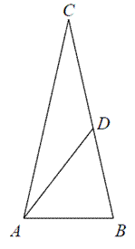

Suma kątów wewnętrznych trójkąta
W dowolnym trójkącie suma miar kątów wewnętrznych
jest stała i wynosi \(180^\circ \).
\[\alpha +\beta +\gamma =180^\circ \]
Punkt \(D\) leży na boku \(BC\) trójkąta równoramiennego \(ABC\), w którym \(|AC| =
|BC|\). Odcinek \(AD\) dzieli trójkąt \(ABC\) na dwa trójkąty równoramienne w taki sposób, że \(|AD|
= |CD|\) oraz \(|AB| = |BD|\) (patrz rysunek). Udowodnij, że \(|\sphericalangle ADC| = 5\cdot
|\sphericalangle ACD| \) . 
Punkt \(D\) leży na boku BC trójkąta równoramiennego \(ABC\), w którym \(|AC| =
|BC|\). Odcinek \(AD \) dzieli trójkąt \(ABC\) na dwa trójkąty równoramienne w taki sposób, że
\(|AB| = |AD| = |CD|\). Oblicz miary kątów trójkąta \(ABC\). 
\(72^\circ \), \(72^\circ \), \(36^\circ \)